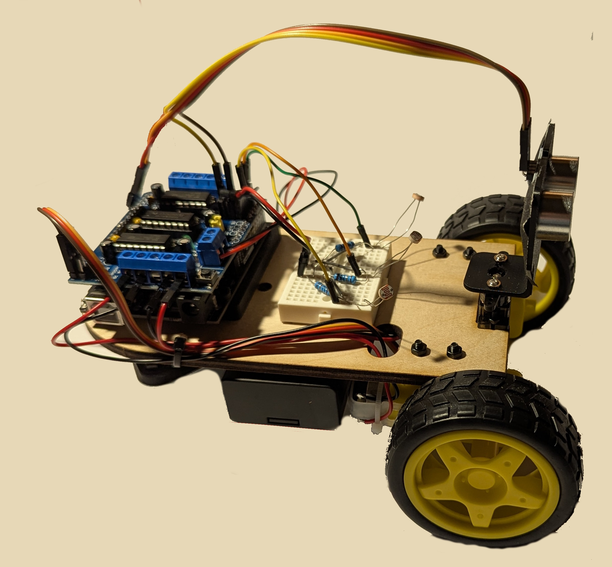

Lab 7: Building a Mr. Roboto (Part-1): Motors!
This is the first in a series of two labs that will introduce you to building and programming your own robot. In this series, you will learn the basics of DC motors, motor control, sensor integration and algorithm development. In this first lab, we will learn about DC motors and tackle the assembly and motor control. By the end you will have your robot driving a trajectory you designed.
ü¶∫ Safety and Important Tips
(1 minute read)
The voltages and currents we are using are not capable of being harmful, but there are infinite ways to fry your circuit.
Always follow these tips as you complete this and future labs:
- Unpower your circuit when making any change
- Double check your wiring before plugging in
- When soldering, check for bridges between pads
- Many of the components are cheap/fragile, use them only as instructed
üî® Fabrication Quest of the Day
- Today, you will assemble and drive a robotic car:
- Assemble a robotic car without sensors
- Give basic driving commands
- Laser cut robotic chassis (x1)
- Motor mount (x2)
- Ardiuno + motor shield (x1)
- Ardiuno mount (x1)
- Caster wheel standoff (x2)
All other parts can be found on the shelves. Ask if you have trouble finding anything.
üèóÔ∏è Software & Hardware
Software:
- Fusion360 Ardiuno IDE
Hardware:
- 3mm x 15 (x20000002)
- 2.5mm x 15 (x1231232)
- 4mm x 15 (x22 million)
Machines:
- Soldering Iron
Part (0): Understanding Code and Testing the Motors (25 mins)
We are using the L293D motor shield. It has support for 4 DC motors (or 2 steppers) and 2 servos. We can also power the motors and Ardiuno through the shield. We are using the AFMotor library because, while we technically don’t need it, libraries make our code easier to write and read. We don’t have to worry about the exact pins and values we are writing to or creating our own PWM signals.
We are going to start this lab by understanding how we can control our motors using the AF_Motor library you installed. Then we will test the motors and make a function that will be even better at controlling the motors.
- Download Motor Library Click the books icon on the left side of the Ardiuno IDE and install "Adafruit Motor Shield library"
- Initialize the library. This tells Ardiuno that you can use functions from this external library
- Create motor objects for two motors
- Set motor speed. setSpeed only takes a range of 0-255. It sends a PWM signal to the motor.
- Set motor direction. The options are FORWARD, BACKWARD, and RELEASE. RELEASE stops the motors.
- Plug the motor shield into the Ardiuno, making sure the pins are all aligned.
- Get two of the yellow TT motors and plug them into the M1 and M2 terminals on the shield as shown. M1 should be the left motor, and M2 the right motor. It actually doesn't matter which terminal has red or black. If you swap it, it will just reverse the direction of the motor
- Upload the code. The reason the motors spin so slow is because they are being powered by the Ardiuno which cannot supply enough current.
- Alter the code to switch the direction of the motors.
#include <AFMotor.h> AF_DCMotor rightMotor(1); // Motor connected to M1
AF_DCMotor leftMotor(2); // Motor connected to M2void setup() {
rightMotor.setSpeed(100);
leftMotor.setSpeed(100);
} void setup() {
rightMotor.setSpeed(100);
leftMotor.setSpeed(100);
rightMotor.run(FORWARD);
leftMotor.run(FORWARD);
}
Now, make alter your code to drive the motors forward for 3 seconds, stops for 1 seconds, drive backward for 3 seconds and repeat.
Checkoff 1
Ask your instructor for a check-off on completing Part (1). Demonstrate your forward, stop, and backwards script.Part (2) Assembling the Chassis
We are now going to assemble our chassis. Make sure you have all the following pieces.
- Laser cut chassis (x1)
- Motor mount (x2)
- Ardiuno + motor shield (x1)
- Ardiuno mount (x1)
- Caster wheel standoff (x2)
- 2/2.5/3mm screws.
Now attach components to the laser cut chassis in the following order:
- Attach the motor mounts to the chassis using 3mm x 12mm (x4) bolts
- Attach the Ardiuno to its mount and the chassis using 3mm x 16mm (x3) bolts
- Attach the ball caster and spacer to its mount and the chassis using 3mm x 16mm (x3) bolts
- Mount Motors to motor brackets using long 3mm x 16mm (x3) bolts
- Mount Servo at front using 2mm x 6mm (x3) bolts. This is a bit tricky so don't do it if you are running low on time.
- Use double sided tape to mount battery pack on bottom in orientation depicted
- Stick mini breadboard to robot
- Add wheel
Congrats! You have built a robot.
Part (3) Driving the Robot
We are now going to control our robot
- Try driving your robot in a straight line by setting each motor to some speed. What do you notice about the direction? Does it drive straight?
- Adjust the relative motor speeds until your robot drives roughly straight.
- We will create a new function that drives straight for a certain time called driveStraight(millis). To create a function in Ardiuno, you must declare the return type. If the function should return nothing, then the type is void (as it is here). Otherwise, consider a function that would return an integer value of a sensor - it would have type int. Fill in the body of the driveStraight function with the values you found in the previous step and place it at the end of the script. Even though function is at the end, it can still be called at the top. This is because the Ardiuno IDE reads the entire script before running it.
- Test it by driving forward for 0.5, 1, 3 seconds
- Try to command your robot to turn in place exactly 90 degrees counter clockwise. How should each motor be commanded? Set a turn speed, and just alter the duration of turn to dial in 90 degrees.
- Using this timing, fill in the body of the function called turnRight(). Then do the same process to create turnLeft(). Place both functions at at the end of your script.
- In the loop() of your code, use your turning and driving functions.e with side length 50cm clockwise. Do it again going counterclockwise. How well does it return to its starting location? What might cause this? What ideas of sensors could we use to fix this?
void driveStraight(int millis) {
// TODO: Fill in the body of this function
}

void turnRight() {
// TODO: Fill in the body of this function
}
void turnLeft() {
// TODO: Fill in the body of this function
}


You may have noticed that it was difficult to get your robot to drive straight and turn a desired amount consistently. This is because the robot is open-loop. It has no idea where it is or where it is going. We are going to close the loop next lab by adding sensors so the robot can detect where it is and where it wants to go.
Part (4) Remix Driving!
Now that you have a robot that can drive as you command it, try driving in more interesting shapes. Here are some ideas to get you started:
- Drive in a circle with a desired radius
- Drive in an n-sided polygon (square, hexagon, octagon etc). Can you make a function that can take in a number of sides and drives in that shape?
- Drive in an infinity symbol
- Drive in the shape of some mathematical function